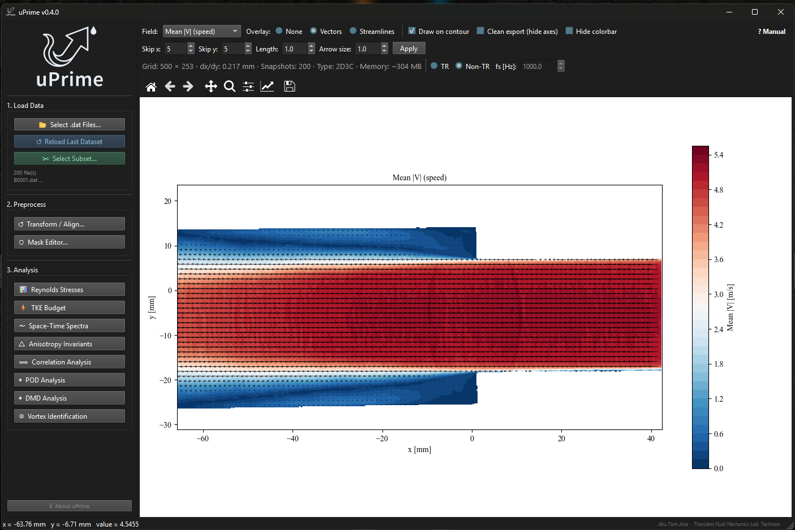

Turbulence is complex. Analysis shouldn't be.
uPrime is a standalone desktop application for post-processing and turbulence analysis of velocity field data from PIV and CFD. No scripting. No setup. Just analysis.

All heavy analysis runs in background threads. The window stays fully responsive during POD, DMD, TKE budget, and vortex identification.
Datasets exceeding 4 GB are automatically memory-mapped to disk. Handle 10,000+ snapshots without running out of RAM.
Draw masks over walls, shadows, and reflections. Raw data is never modified — toggle masks on and off instantly.
Reads mm/m/s units directly from Tecplot .dat file headers. No manual configuration needed.
PNG (300 DPI), PDF, and SVG with editable text. Compatible with Adobe Illustrator and Inkscape.
Windows .exe with no Python or dependencies required. macOS and Linux users run from source in three commands.
Correct camera misalignment, shift the coordinate origin, and mirror datasets. Built for experimental data where even a 1° tilt can corrupt turbulence statistics.
Correct camera misalignment, shift the coordinate origin, and mirror datasets. Built for experimental data where even a 1° tilt can corrupt turbulence statistics.
Reynolds stresses, TKE budget, spectra, POD, DMD, correlations, and vortex identification — all in one environment, no MATLAB or Python required.
Compute spatial and temporal correlations with automatic integral length and time scale extraction using multiple robust methods.